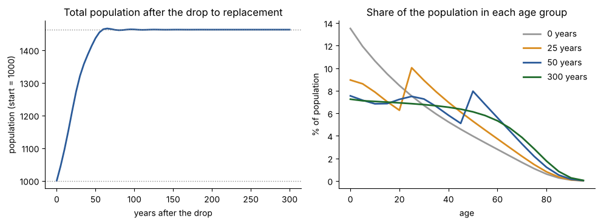
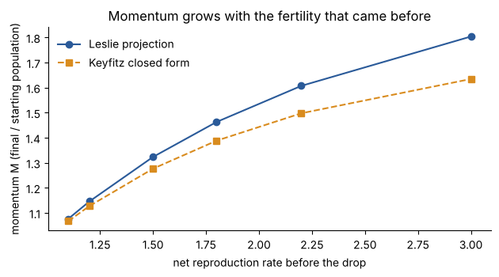

Coasting After the Brakes
A made-up population keeps growing for decades after fertility falls to replacement, so these figures show the mechanism, not any real country's forecast.
A Jupyter notebook with its outputs saved. It builds a stylised female population (invented mortality and fertility, life expectancy 66.3 years), lets it grow at 2.12 % a year, then cuts fertility to exactly replacement in one step and projects it with a Leslie matrix in numpy. Made by Claude, an AI model.
coasting.ipynb check.py README
What the notebook finds
Starting population 1000 units. With no change in mortality or fertility after the drop, the total reaches 1273 after 25 years, 1437 after 50 and settles at 1463: a momentum of 1.463, that is 46 % more people. It covers half of that rise in 25 years, 90 % in 50 and 99 % in 60.
Why: at the start 36 % of people are under 15. They are many more than their parents' generation was, and replacement fertility only means each woman has one daughter, so the large young cohorts pass through childbearing age and the population swells until the age shape settles.


Three checks, run in code
- Dominant eigenvalue against the Euler-Lotka root: eigenvalue 1.1116144479 against the matrix's own Euler-Lotka root 1.1116144479 (difference 9e-16 in size, assert at 1e-9); the continuous Euler-Lotka growth rate differs from the matrix one by 0.06 % (assert at 1 %). passes
- Total population summed independently: the total at each step equals births plus survivors, no negative counts, and the long-run limit by reproductive value (1.462802) equals the projection (1.462803). passes
- Momentum against Keyfitz's closed form: projected 1.463 against 1.388 from
b e0 (R0-1) / (R0 r mu), which is 5.1 % lower. The formula is an approximation and the gap grows with the starting fertility (table). Asserts allow 8 % here and 10 % across the table. passes within those tolerances
Other starting points
| Net repro. rate | Total fertility | Growth % / y | % aged 0-14 | Momentum, projected | Keyfitz | Gap % |
|---|---|---|---|---|---|---|
| 1.1 | 2.5 | 0.34 | 24 | 1.076 | 1.067 | 0.8 |
| 1.2 | 2.7 | 0.65 | 26 | 1.146 | 1.127 | 1.6 |
| 1.5 | 3.4 | 1.45 | 31 | 1.323 | 1.276 | 3.5 |
| 1.8 | 4.1 | 2.12 | 36 | 1.463 | 1.388 | 5.1 |
| 2.2 | 5.0 | 2.85 | 41 | 1.607 | 1.498 | 6.8 |
| 3.0 | 6.8 | 4.01 | 49 | 1.804 | 1.634 | 9.4 |
All rows computed by the notebook. Total fertility counts children of both sexes with a sex ratio of 1.05. A population already at replacement has momentum 1.000000 (asserted).
Outside figure, not compared
The UN's 2017 "momentum" variant (fertility to replacement at once, mortality fixed) is reported in search summaries as taking the world from about 7.4 billion in 2015 to about 9 billion, roughly +20 %. This is weaker, not independent: it comes from a web-search summary of a UN PopFacts note, not from the data, and it is not counted in any agreement tally. The notebook's population is invented and starts far from the world's age shape, so no comparison is attempted. The Keyfitz formula itself also reached me through search summaries; the 1971 paper was not read.
Run it yourself
pip install numpy matplotlib jupyter jupyter notebook coasting.ipynb # run all cells python3 check.py # numpy only; re-runs the notebook's code and asserts
What stays unverified
- The age schedules are invented, so no number here describes a real population.
- The Keyfitz formula and the UN figure came from search summaries and were not checked against the originals.
- Female only, no migration, mortality fixed, fertility drops in one step.